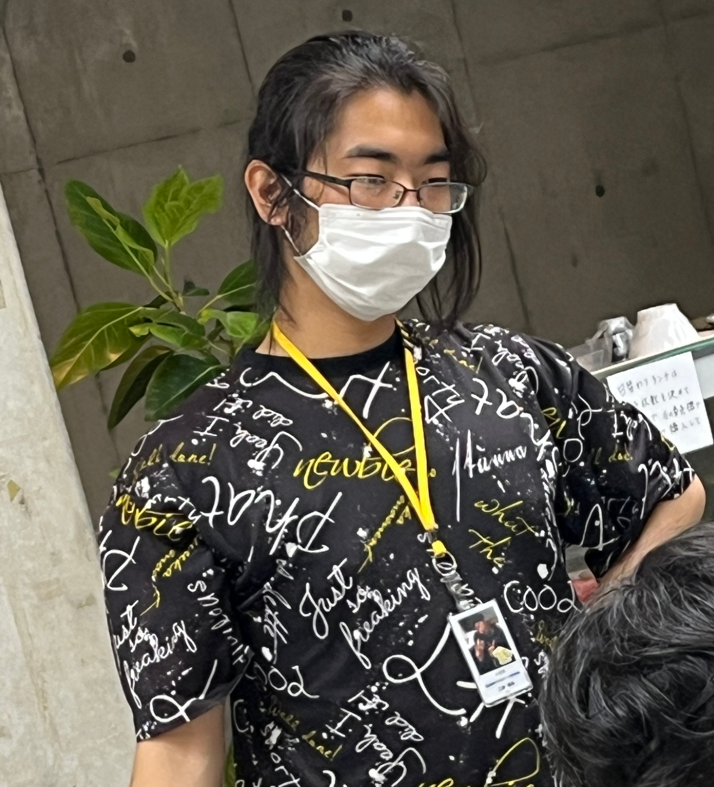
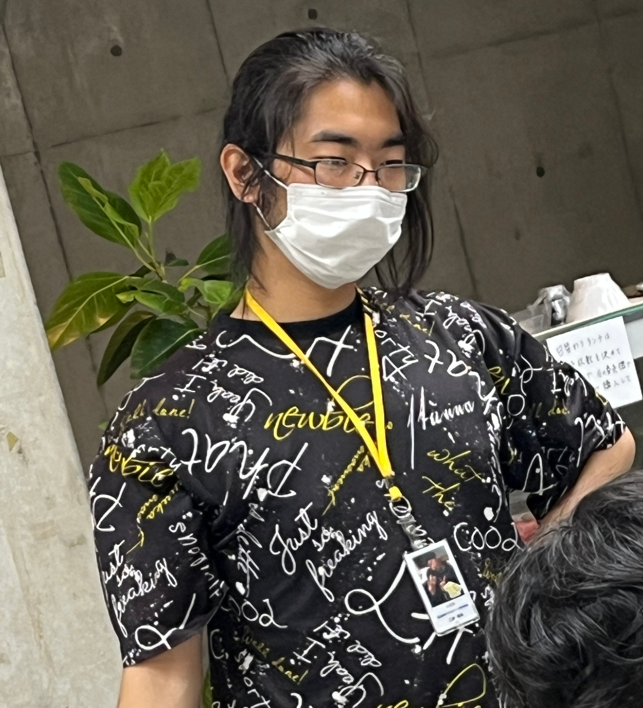
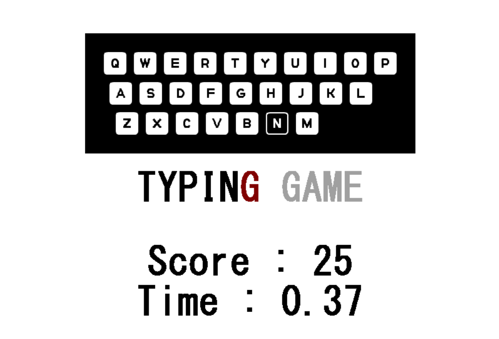
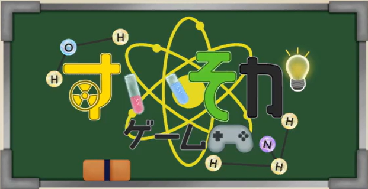
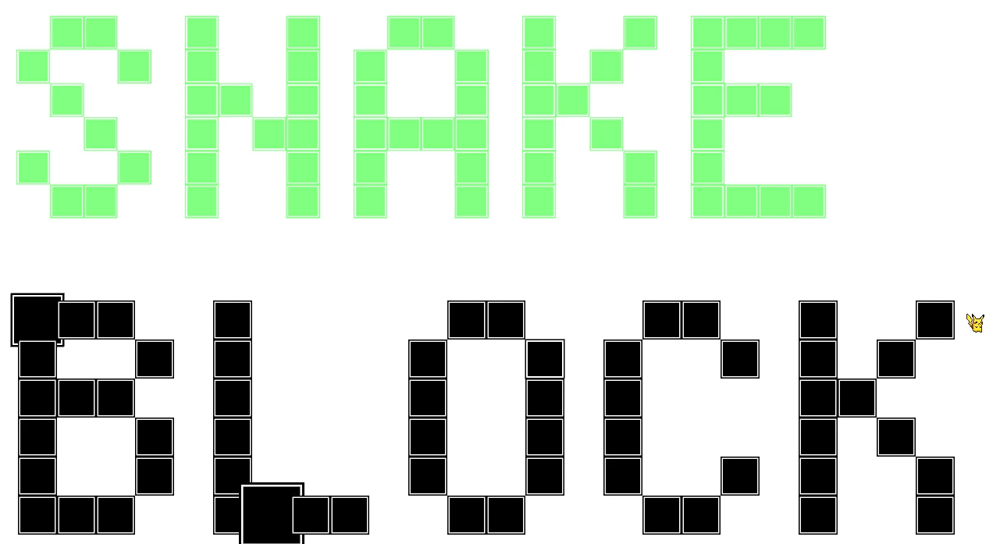

ポートフォリオ
自己紹介
 

- 名前：江藤 優真
- 学校：横浜デジタルアーツ専門学校
- 学年：2年 ゲーム科
特技・趣味
- 特技：人力車での観光案内
- 趣味：ゲーム・グッズ収集
資格
- CGクリエイター検定 ベーシック
- 情報検定（J検）3級
使用スキル
- C++ / C / C# / Python
- Unity / Unreal Engine
自己PR
プログラムの内部構造や挙動にこだわることが得意です。
作品紹介

TypingGame

DDD

すいそかゲーム

SnakeBlock
自作ゲームエンジン
C++で制作した自作ゲームエンジンです。 2Dゲーム制作を目的として、描画・入力・オブジェクト管理などの基礎機能を実装しています。
GitHub（MyGameEngine）連絡先
- Email：etouyuma@gmail.com
- URL：https://etoyumaportfolio.netlify.app/